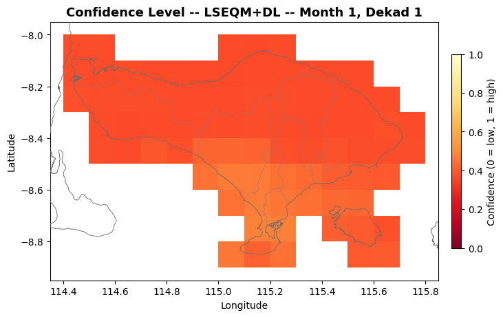
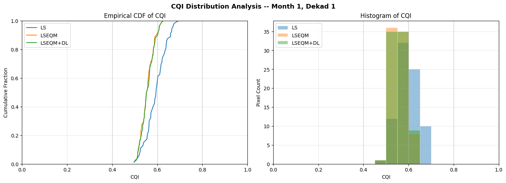
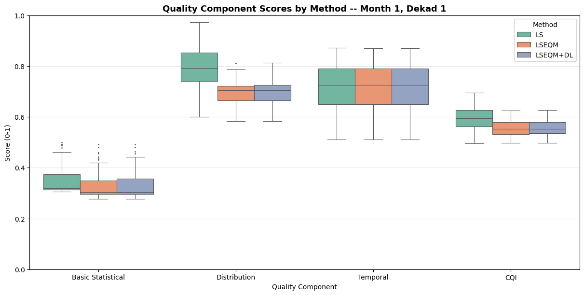
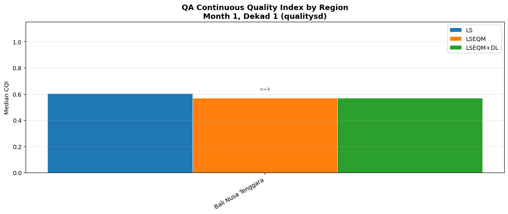
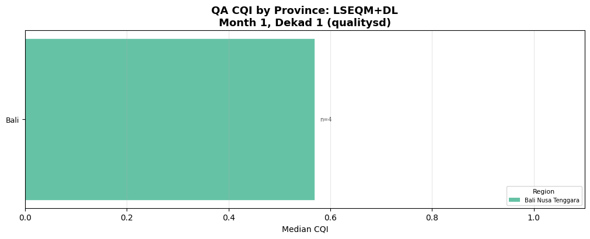
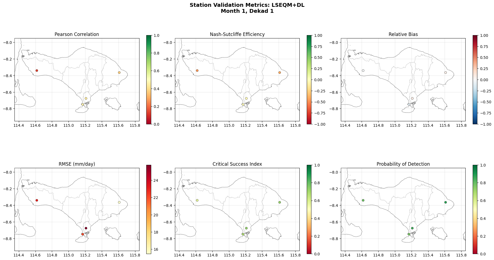
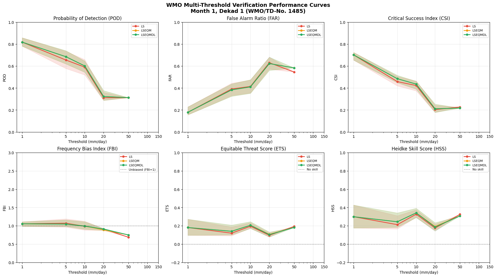
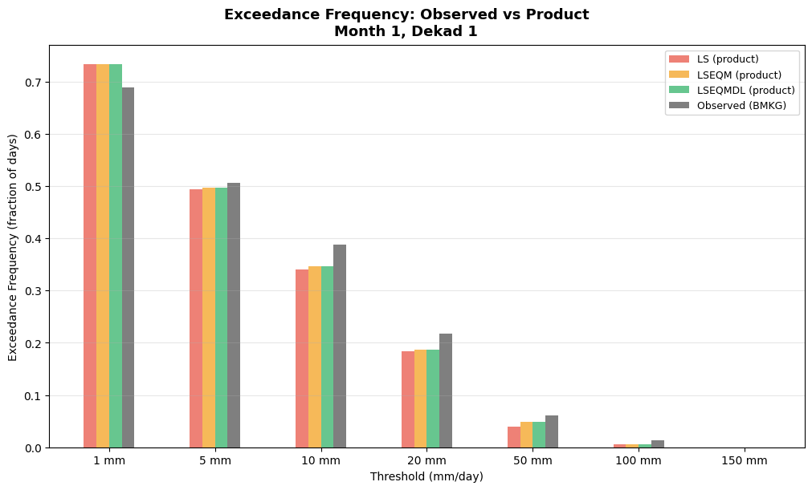
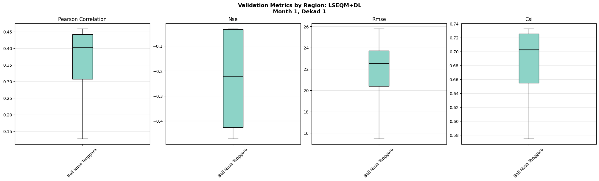

Taylor Diagrams (Steps 12–19): Product comparison against BMKG stations
Station Validation (Steps 20–23): Spatial maps, multi-threshold curves, and regional box plots from notebook 05 output
A unified batch cell (Step 24) generates all figures across all 36 dekadal periods in a single run.
All plot functions are imported from src/visualisation.py and src/taylor_diagram.py. Each plot type saves into its own sub-folder under figures/.
1 Connect Google Drive (Colab only)
This section is only required when running in Google Colab and your project/data are stored in Google Drive.
Mounting Drive makes your repository and datasets accessible under /content/drive.
If you run this notebook locally (Jupyter / VS Code), skip this section.
Expected structure (Drive) After mounting, your project root should contain: - notebooks/ - src/ - config.yml (or config.yaml)
Proceed to the code cell below to mount Drive.
from google.colab import driveimport os# Check if the drive is mountedif os.path.exists("/content/drive"):# Try to unmounttry: drive.flush_and_unmount()print("Successfully unmounted")except:print("Unmount failed, the drive might not be mounted or busy")# Mount the drivedrive.mount("/content/drive")
Successfully unmounted
Mounted at /content/drive
Troubleshooting:
- If Colab becomes disconnected, Reconnect the runtime and rerun the mounting cell. - If we receive an error such as Mountpoint must not already contain files, delete all the sub-folders under “/content/drive” from the Files panel before retrying. We need to delete these one by one starting from the innermost folders, until the last “drive” folder is deleted.
2 Install packages (only if needed)
In most cases, Google Colab already includes the packages required for this workflow. The most common missing dependency is netCDF4 (NetCDF I/O support).
Check what is already installed (Colab)
Before installing anything, you can inspect the current environment by running !pip list.
If all required packages are present and only netCDF4 is missing, install only netCDF4.
If other required packages are missing from !pip list, install them together withnetCDF4 in the code cell below.
Local Jupyter note
If you are running in a local environment (Jupyter / VS Code), assume all dependencies were installed when preparing the environment following the main repository README. In that case, you can skip this section.
Proceed to the code cell below only when installation is necessary.
# In Google Colab, almost all packages already available, except netCDF4!pip install netCDF4
Requirement already satisfied: netCDF4 in /usr/local/lib/python3.12/dist-packages (1.7.4)
Requirement already satisfied: cftime in /usr/local/lib/python3.12/dist-packages (from netCDF4) (1.6.5)
Requirement already satisfied: certifi in /usr/local/lib/python3.12/dist-packages (from netCDF4) (2026.4.22)
Requirement already satisfied: numpy>=1.21.2 in /usr/local/lib/python3.12/dist-packages (from netCDF4) (2.0.2)
3 Quality Assessment Visualization
This section generates spatial maps, distribution plots, and summary charts from the composite quality indices computed by notebook 04. Eight complementary plot types are produced, each highlighting a different aspect of correction quality:
CQI spatial maps – continuous quality index for each correction method
Quality category summary – grouped bar chart of category percentages
Component box plots – score distribution across methods
All plot functions are imported from src/visualisation.py and each type saves into its own sub-folder under figures/qa/.
Step 1: Environment Setup
"""Step 1: Environment setup and configuration."""import osimport sysimport warningsimport numpy as npimport pandas as pdimport xarray as xrimport matplotlib.pyplot as pltwarnings.filterwarnings("ignore", category=FutureWarning)# Resolve project rootif os.path.exists("/content/drive/MyDrive/hybrid-bias-correction"): project_root ="/content/drive/MyDrive/hybrid-bias-correction"else: project_root = os.path.abspath(os.path.join(os.getcwd(), ".."))if project_root notin sys.path: sys.path.insert(0, project_root)# ===========================================================================# AOI config selector# 'config.yml' -> full Indonesia (Zenodo input/output bundle)# 'config_bali.yml' -> Bali example (ships with the repo, ~11 MB)# Edit this single line to switch the entire pipeline between the two.# ===========================================================================CONFIG_FILE ='config_bali.yml'from src.config import initialize_configinitialize_config(os.path.join(project_root, CONFIG_FILE))from src import config# Output directories for all figure typesfigures_dir = os.path.join(config.output_dir, "figures", "qa")taylor_output_dir = os.path.join(config.output_dir, "figures", "taylor")station_viz_dir = os.path.join(config.output_dir, "figures", "station_validation")for d in [figures_dir, taylor_output_dir, station_viz_dir]: os.makedirs(d, exist_ok=True)print(f"Project root: {project_root}")print(f"QA figures dir: {figures_dir}")print(f"Taylor dir: {taylor_output_dir}")print(f"Station viz dir: {station_viz_dir}")
2026-05-22 04:37:29,235 - INFO - Loaded configuration from /content/drive/MyDrive/hybrid-bias-correction/config_bali.yml
2026-05-22 04:37:29,239 - INFO - Configured main_dir '/content/hybrid-bias-correction' does not exist on this system. Using auto-detected project root: /content/drive/MyDrive/hybrid-bias-correction
2026-05-22 04:37:29,245 - INFO - Configuration initialized successfully.
2026-05-22 04:37:29,245 - INFO - Main directory: /content/drive/MyDrive/hybrid-bias-correction
2026-05-22 04:37:29,247 - INFO - Input directory: /content/drive/MyDrive/hybrid-bias-correction/data/example_bali
2026-05-22 04:37:29,248 - INFO - Output directory: /content/drive/MyDrive/hybrid-bias-correction/data/example_bali/output
2026-05-22 04:37:29,250 - INFO - Interactive mode: False
Project root: /content/drive/MyDrive/hybrid-bias-correction
QA figures dir: /content/drive/MyDrive/hybrid-bias-correction/data/example_bali/output/figures/qa
Taylor dir: /content/drive/MyDrive/hybrid-bias-correction/data/example_bali/output/figures/taylor
Station viz dir: /content/drive/MyDrive/hybrid-bias-correction/data/example_bali/output/figures/station_validation
Step 2: Select Period and Quality Mode
"""Step 2: User inputs for interactive exploration."""# Select month (1-12) and dekad (1, 2, or 3)month =1dekad =1# Quality mode: "qualitysd" (single-dekad aggregated) or "qualityts" (per-year)quality_prefix ="qualitysd"print(f"Period: month {month}, dekad {dekad}")print(f"Quality mode: {quality_prefix}")
Mean confidence: 0.3915
Min confidence: 0.3659
Max confidence: 0.4781
2026-05-22 04:12:49,302 - INFO - Saved: /content/drive/MyDrive/hybrid-bias-correction/data/example_bali/output/figures/qa/qualitysd_confidence/bali_cli_qa_viz_qualitysd_confidence_month01_dekad01.png

Step 9: CQI Distribution Analysis
"""Step 9: Empirical CDF and histogram of CQI."""from src.visualisation import plot_cqi_distributionfig = plot_cqi_distribution( quality_data, month, dekad, quality_prefix=quality_prefix, output_dir=figures_dir,)
Median CQI (LS): 0.5947
Median CQI (LSEQM): 0.5531
Median CQI (LSEQM+DL): 0.5536
2026-05-22 04:12:50,815 - INFO - Saved: /content/drive/MyDrive/hybrid-bias-correction/data/example_bali/output/figures/qa/qualitysd_cqi_distribution/bali_cli_qa_viz_qualitysd_cqi_distribution_month01_dekad01.png

Step 10: Quality Category Summary
"""Step 10: Grouped bar chart of quality category percentages."""from src.visualisation import plot_category_summaryfig, cat_summary = plot_category_summary( quality_data, month, dekad, quality_prefix=quality_prefix, output_dir=figures_dir,)
Method Poor Fair Good Excellent Total
------------------------------------------------------------------
LS 0.0% 56.2% 43.8% 0.0% 80
LSEQM 0.0% 90.0% 10.0% 0.0% 80
LSEQM+DL 0.0% 88.8% 11.2% 0.0% 80
2026-05-22 04:12:51,984 - INFO - Saved: /content/drive/MyDrive/hybrid-bias-correction/data/example_bali/output/figures/qa/qualitysd_category_summary/bali_cli_qa_viz_qualitysd_category_summary_month01_dekad01.png
2026-05-22 04:12:53,598 - INFO - Saved: /content/drive/MyDrive/hybrid-bias-correction/data/example_bali/output/figures/qa/qualitysd_component_boxplots/bali_cli_qa_viz_qualitysd_component_boxplots_month01_dekad01.png

Step 11b: QA at Station Locations — Regional Summary
Extract gridded QA values at BMKG station locations, then visualize median CQI grouped by the 7 island regions (one bar per method).
"""Step 11b: QA CQI by region — grouped bar chart."""from src.station_density import load_station_locationsfrom src.visualisation import plot_qa_regional_barsstation_df = load_station_locations(config.STATION_FILE)fig = plot_qa_regional_bars( quality_data, station_df, month, dekad, quality_prefix=quality_prefix, output_dir=figures_dir,)
2026-05-22 04:12:54,291 - INFO - Loaded 4 station locations from /content/drive/MyDrive/hybrid-bias-correction/data/example_bali/bali_stations_location.csv
2026-05-22 04:12:55,053 - INFO - Saved: /content/drive/MyDrive/hybrid-bias-correction/data/example_bali/output/figures/qa/qualitysd_qa_regional/bali_cli_qa_viz_qualitysd_qa_regional_month01_dekad01.png

Step 11c: QA Components by Region
Box plots of the four QA component scores (CQI, basic statistical, distribution, temporal) at station locations, grouped by island region. Uses the best method (LSEQM+DL) only.
2026-05-22 04:12:58,192 - INFO - Saved: /content/drive/MyDrive/hybrid-bias-correction/data/example_bali/output/figures/qa/qualitysd_qa_province/bali_cli_qa_viz_qualitysd_qa_province_lseqmdl_month01_dekad01.png

Step 11e: QA CQI per Station
Per-station CQI bar chart (best method), filtered by region. Change region_filter to view a different island group, or set to None to show all stations.
"""Step 11e: QA CQI per station (single region)."""from src.visualisation import plot_qa_station_barsfig = plot_qa_station_bars( quality_data, station_df, month, dekad, quality_prefix=quality_prefix, region_filter="Jawa", # Change to view other regions, or None for all output_dir=figures_dir,)
4 Taylor Diagram Analysis
This notebook generates Taylor diagrams that visually summarize the performance of bias-corrected precipitation products against independent BMKG station observations.
What is a Taylor Diagram?
A Taylor diagram (Taylor, 2001) simultaneously displays three statistics in a single polar plot:
Pearson correlation (angular axis) – linear agreement with reference
Standard deviation ratio (radial axis) – variability match
Centered RMSE (distance from reference point) – overall error
Each product appears as a marker; perfect agreement places the marker on the reference point (correlation = 1, normalized std = 1). Progressive improvement from raw satellite to fully corrected product is immediately visible as markers move toward the reference.
Products Compared
Product
Description
CPC-UNI
Gauge-based reference (0.50b0, used as correction target)
Domain-wide – all 171+ BMKG stations pooled (for the paper)
By island group – 7 regions (Sumatra, Jawa, Kalimantan, etc.)
By province – individual provinces (min 3 stations)
By station – individual station markers with domain aggregate overlay
Prerequisites
Notebook 02 must have completed (corrected files for LS, LSEQM, LSEQMDL)
BMKG station data CSV must be available (location + observations)
CPC-UNI and IMERG-L files must be available
Reference
Taylor, K. E. (2001). Summarizing multiple aspects of model performance in a single diagram. Journal of Geophysical Research, 106(D7), 7183–7192.
Step 12: Compute Taylor Diagram Statistics
This step processes all 36 dekads (12 months × 3 dekads), loading six gridded products (CPC, IMERG-L, IMERG-F, LS, LSEQM, LSEQM+DL) for each dekad and extracting values at each BMKG station location.
Running statistics (sums, sums of squares, cross-products) are accumulated per station per product, enabling exact computation of correlation, standard deviation, and RMSE without keeping all raw data in memory.
Expected runtime: 3–10 minutes depending on disk I/O speed.
"""Step 12: Compute Taylor statistics across all 36 dekads.This is the most time-consuming step. The resulting accumulator objectis reused by all subsequent plotting steps."""from src.taylor_diagram import compute_all_taylor_stats# acc : pooled per-station accumulator across all 36 dekads# station_locs : station metadata DataFrame# acc_by_dekad : {(month, dekad_start): _Accumulator} for per-dekad viewsacc, station_locs, acc_by_dekad = compute_all_taylor_stats(config, progress=True)print(f"\nAccumulator products: {acc.product_keys}")print(f"Stations: {acc.n_stations}")print(f"Per-dekad accumulators: {len(acc_by_dekad)}")print("Total paired observations per product:")for i, key inenumerate(acc.product_keys): total_n = acc.n[i].sum() active_stations = (acc.n[i] >0).sum()print(f" {key:>10s}: {total_n:>12,d} pairs across {active_stations} stations")
Loaded 4 station locations
Matched 4/4 stations to obs data
Station obs: 7670 rows, 2001-01-01 00:00:00 to 2021-12-31 00:00:00, dtype=datetime64[ns]
Processing dekad 1/36 (month 01, days 1-10) ... cpc: 250 dates, type=datetime64
imergl: 250 dates, type=datetime64
imergf: 250 dates, type=datetime64
ls: 250 dates, type=datetime64
lseqm: 250 dates, type=datetime64
lseqmdl: 250 dates, type=datetime64
Processing dekad 36/36 (month 12, days 21-31) ...
Done computing Taylor statistics (184,080 total paired observations).
Accumulator products: ['cpc', 'imergl', 'imergf', 'ls', 'lseqm', 'lseqmdl']
Stations: 4
Per-dekad accumulators: 36
Total paired observations per product:
cpc: 19,868 pairs across 4 stations
imergl: 19,871 pairs across 4 stations
imergf: 19,871 pairs across 4 stations
ls: 19,871 pairs across 4 stations
lseqm: 19,871 pairs across 4 stations
lseqmdl: 19,871 pairs across 4 stations
Step 13: Domain-Wide Taylor Diagram
Pool all station data across the full Indonesian domain. This produces one marker per product, showing the overall performance comparison.
This is the figure intended for the paper (Figure 4 in revision notes).
Generate a multi-panel figure with one Taylor diagram per major island group: Sumatra, Jawa, Kalimantan, Sulawesi, Bali Nusa Tenggara, Maluku, and Papua. Stations are pooled within each region.
This reveals regional differences in correction performance (e.g., Java with dense gauge coverage vs. Papua with sparse coverage).
Generate per-province Taylor diagrams for provinces with at least 3 stations. Provinces with fewer stations are skipped as the pooled statistics would be unreliable.
This provides the finest administrative-level breakdown of correction performance.
Shows individual station markers (small, semi-transparent) for each product, overlaid with larger opaque markers representing the domain-wide aggregate. This reveals the spread of per-station performance within each product category.
Stations that cluster tightly around the aggregate marker indicate consistent correction quality across the network. Wide scatter indicates spatially variable performance.
Export per-station Taylor statistics for all products to a CSV file. This enables further analysis (e.g., in R, Excel) without re-running the computation.
"""Step 17: Save per-station Taylor statistics to CSV."""from src.taylor_diagram import save_taylor_stats_csvcsv_path = os.path.join(taylor_output_dir, 'taylor_statistics_per_station.csv')stats_df = save_taylor_stats_csv(acc, station_locs, csv_path)print(f"\nCSV shape: {stats_df.shape}")print(f"Columns: {list(stats_df.columns)}")stats_df.head(10)
If you want to generate everything in a single call instead of running Steps 12–17 individually, use generate_all_taylor_diagrams(). This computes statistics and produces all four diagram variants plus the CSV.
Note: Only run this if you have NOT already run Steps 12–17 above, as it will repeat the computation.
"""Step 18 (Alternative): Generate all Taylor diagrams in one call.Uncomment and run this cell INSTEAD of Steps 12-17 if preferred."""# from src.taylor_diagram import generate_all_taylor_diagrams## acc, station_locs, acc_by_dekad = generate_all_taylor_diagrams(# config,# output_dir=taylor_output_dir,# )
Step 19: Custom Taylor Diagram (On-Demand)
Generate a Taylor diagram for a specific subset of products or a specific region. Modify the parameters below as needed.
Examples: - Show only corrected products (exclude raw IMERG) - Focus on a single island - Compare only LSEQM vs LSEQM+DL
"""Step 19: Custom Taylor diagram for a specific region or product subset.Modify TARGET_REGION and PRODUCTS_TO_SHOW as needed."""from src.taylor_diagram import plot_taylor_diagram, print_taylor_stats# --- User settings ---TARGET_REGION ='Jawa'# One of: Sumatra, Jawa, Kalimantan, Sulawesi,# Bali Nusa Tenggara, Maluku, Papua# Set to None for domain-widePRODUCTS_TO_SHOW =None# None = all products, or e.g. ['ls', 'lseqm', 'lseqmdl']# --- Compute stats ---if TARGET_REGION isnotNone: mask = (station_locs['Region'] == TARGET_REGION).values n_st = mask.sum() stats = acc.compute_median(station_mask=mask) title =f'Taylor Diagram: {TARGET_REGION} ({n_st} stations)'else: stats = acc.compute_median() title ='Taylor Diagram: Domain-wide'# --- Print table ---print_taylor_stats(stats, title=title)# --- Plot ---fig, ax = plot_taylor_diagram( stats, title=title, normalize=True, products_to_show=PRODUCTS_TO_SHOW, max_std_ratio=2.0,)plt.show()
5 Station Validation Visualization
This section visualizes the independent station validation results from notebook 05. Three plot types are generated from the CSV outputs:
Station metric scatter maps – spatial distribution of 6 key metrics
WMO multi-threshold curves – categorical skill across intensity thresholds
Regional box plots – metric distributions by main island
All plot functions are imported from src/visualisation.py and save into sub-folders under figures/station_validation/.
Prerequisites: Notebook 05 batch must have completed (CSV outputs in data/output/station_validation/).
Step 20: Load Station Validation CSV
Load per-station validation metrics and multi-threshold summaries from the CSV files produced by notebook 05. Set month and dekad to match the period selected in Step 2.
"""Step 20: Load station validation CSV data for a single period."""from src.station_density import load_station_locationsfrom src.station_validation import merge_station_metadata# Load station locationsstation_df = load_station_locations(config.STATION_FILE)# Build path to station validation CSVsv_dir =getattr(config, "STATION_VALIDATION_OUTPUT_DIR", None)if sv_dir isNone: sv_dir = os.path.join(config.output_dir, "station_validation")month_str =f"{month:02d}"dekad_map = {1: "01", 2: "11", 3: "21"}dekad_str = dekad_map[dekad]# Load metrics for each methodsv_metrics = {}for method_key, method_abbr in [("LS", "ls"), ("LSEQM", "lseqm"), ("LSEQMDL", "lseqmdl")]: csv_path = os.path.join( sv_dir,f"station_validation_{method_abbr}_month{month_str}_dekad{dekad_str}.csv", )if os.path.exists(csv_path): sv_metrics[method_key] = pd.read_csv(csv_path, index_col=0)print(f" {method_key}: {len(sv_metrics[method_key])} stations from {csv_path}")else:print(f" {method_key}: not found -- {csv_path}")# Load multi-threshold summariessv_mt_summaries = {}for method_key, method_abbr in [("LS", "ls"), ("LSEQM", "lseqm"), ("LSEQMDL", "lseqmdl")]: mt_csv = os.path.join( sv_dir,f"multi_threshold_summary_{method_abbr}_month{month_str}_dekad{dekad_str}.csv", )if os.path.exists(mt_csv): sv_mt_summaries[method_key] = pd.read_csv(mt_csv, index_col=0)print(f"\nMetrics loaded: {list(sv_metrics.keys())}")print(f"Multi-threshold summaries: {list(sv_mt_summaries.keys())}")
2026-05-22 04:39:33,654 - INFO - Loaded 4 station locations from /content/drive/MyDrive/hybrid-bias-correction/data/example_bali/bali_stations_location.csv
LS: 4 stations from /content/drive/MyDrive/hybrid-bias-correction/data/example_bali/output/station_validation/station_validation_ls_month01_dekad01.csv
LSEQM: 4 stations from /content/drive/MyDrive/hybrid-bias-correction/data/example_bali/output/station_validation/station_validation_lseqm_month01_dekad01.csv
LSEQMDL: 4 stations from /content/drive/MyDrive/hybrid-bias-correction/data/example_bali/output/station_validation/station_validation_lseqmdl_month01_dekad01.csv
Metrics loaded: ['LS', 'LSEQM', 'LSEQMDL']
Multi-threshold summaries: ['LS', 'LSEQM', 'LSEQMDL']
Step 21: Station Metric Scatter Maps
Spatial scatter plots showing the distribution of 6 key validation metrics (correlation, NSE, relative bias, RMSE, CSI, POD) at each BMKG station location for the best correction method.
"""Step 21: Station metric scatter maps."""from src.visualisation import plot_station_metric_maps# Use best method availablesv_best ="LSEQMDL"if"LSEQMDL"in sv_metrics elselist(sv_metrics.keys())[-1]if sv_metrics: fig = plot_station_metric_maps( sv_metrics[sv_best], station_df, month, dekad, method_name=sv_best, output_dir=station_viz_dir, )else:print("No station validation data available.")
2026-05-22 04:39:53,007 - INFO - Saved: /content/drive/MyDrive/hybrid-bias-correction/data/example_bali/output/figures/station_validation/station_validation_metric_maps/bali_cli_qa_viz_station_validation_metric_maps_lseqmdl_month01_dekad01.png

Step 22: Multi-Threshold Performance Curves
WMO/TD-No. 1485 style performance curves showing how categorical verification scores (POD, FAR, CSI, FBI, ETS, HSS) change across 7 precipitation intensity thresholds (1–150 mm/day). Each line represents a correction method.
2026-05-22 04:40:04,516 - INFO - Saved: /content/drive/MyDrive/hybrid-bias-correction/data/example_bali/output/figures/station_validation/station_validation_threshold_curves/bali_cli_qa_viz_station_validation_threshold_curves_month01_dekad01.png

2026-05-22 04:40:06,863 - INFO - Saved: /content/drive/MyDrive/hybrid-bias-correction/data/example_bali/output/figures/station_validation/station_validation_exceedance_frequency/bali_cli_qa_viz_station_validation_exceedance_frequency_month01_dekad01.png

Step 23: Regional Box Plots
Box plots of key validation metrics grouped by main island (Region). Reveals regional differences in correction quality — e.g., densely gauged Java vs. sparsely gauged Papua.
"""Step 23: Regional box plots of station validation metrics."""from src.visualisation import plot_regional_boxplotsfrom src.station_validation import merge_station_metadataif sv_metrics: sv_best ="LSEQMDL"if"LSEQMDL"in sv_metrics elselist(sv_metrics.keys())[-1] regional_df = merge_station_metadata(sv_metrics[sv_best], station_df)if"Region"in regional_df.columns: fig = plot_regional_boxplots( regional_df, month, dekad, method_name=sv_best, group_col="Region", output_dir=station_viz_dir, )else:print("Region column not found in station metadata.")else:print("No station validation data available.")
2026-05-22 04:40:13,487 - INFO - Saved: /content/drive/MyDrive/hybrid-bias-correction/data/example_bali/output/figures/station_validation/station_validation_regional_region/bali_cli_qa_viz_station_validation_regional_region_lseqmdl_month01_dekad01.png

Summary
This notebook generated diagnostic visualizations from three complementary evaluation domains:
QA Framework (Steps 4–11e): 8 gridded plot types + 4 station-level regional/province/station breakdowns from composite quality indices
Taylor Diagrams (Steps 12–19): Product comparison against BMKG stations
Station Validation (Steps 20–23): Spatial maps, threshold curves, and regional box plots from independent validation
All figures are saved into organized sub-folders under figures/. The unified batch below generates all figures for all 36 periods.
Step 24: Unified Batch – All Visualization
Generate all figures across all 36 dekadal periods in a single run. This calls four batch orchestrators: